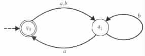
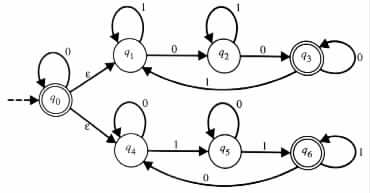
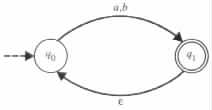
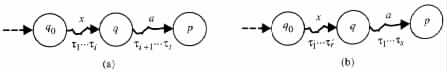
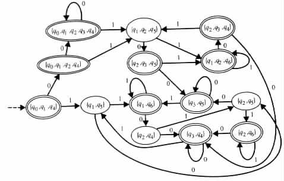
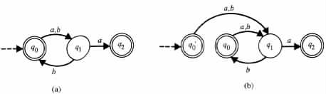
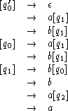
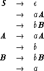
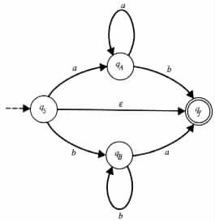
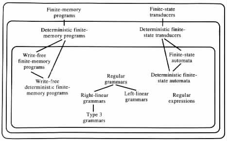

Finite-State Automata
Nondeterminism versus Determinism in Finite-State Automata
Finite-State Automata and Type 3 Grammars
Type 3 Grammars and Regular Grammars
Regular Languages and Regular Expressions
The computations of programs are driven by their inputs. The outputs are just the results of the computations, and they have no influence on the course that the computations take. Consequently, it seems that much can be studied about finite-state transducers, or equivalently, about finite-memory programs even when their outputs are ignored. The advantage of conducting a study of such stripped-down finite-state transducers is in the simplified argumentation that they allow.
A finite-state transducer whose output components are ignored is called a finite-state automaton. Formally, a finite-state automaton M is a tuple <Q, S, d, q0, F>, where Q, S, q0, and F are defined as for finite-state transducers, and the transition table d is a relation from Q × (S È {e}) to Q.
Transition diagrams similar to those used for representing finite-state transducers can also be used to represent finite-state automata. The only difference is that in the case of finite-state automata, an edge that corresponds to a transition rule (p, a, p) is labeled by the string a.
Example 2.3.1 The finite-state automaton that is induced by the finite-state transducer of Figure 2.2.2 is <Q, S, d, q0, F>, where Q = {q0, q1}, S = {a, b}, d = {(q0, a, q1), (q0, b, q1), (q1, b, q1), (q1, a, q0)}, and F = {q0}.
The transition diagram in Figure 2.3.1 represents the finite-state automaton.
|

|
The finite-state automaton M is said to be deterministic if, for each state q in Q and for each input symbol a in S, the union d(q, a) È d(q, e) is a multiset that contains at most one element. The finite-state automaton is said to be nondeterministic if it is not a deterministic finite-state automaton.
A transition rule (q, a, p) of the finite-state automaton is said to be an e transition rule if a = e. A finite-state automaton with no e transition rules is said to be an e-free finite-state automaton.
Example 2.3.2 Consider the finite-state automaton M1 = <{q0, ¼, q6}, {0, 1}, {(q0, 0, q0), (q0, e, q1), (q0, e, q4), (q1, 0, q2), (q1, 1, q1), (q2, 0, q3), (q2, 1, q2), (q3, 0, q3), (q3, 1, q1), (q4, 0, q4), (q4, 1, q5), (q5, 0, q5), (q5, 1, q6), (q6, 1, q6), (q6, 0, q4)}, q0, {q0, q3, q6}>. The transition diagram of M1 is given in Figure 2.3.2.
|

|
M1 is nondeterministic owing to the transition rules that originate at state q0. One of the transition rules requires that an input value be read, whereas the other two transition rules require that no input value be read. Moreover, M1 is also nondeterministic when the transition rule (q0, 0, q0) is ignored, because M1 cannot determine locally which of the other transition rules to follow on the moves that originate at state q0.
The finite-state automaton M2 in Figure 2.3.3 is a deterministic finite-state automaton.
|

|
M1 has two e transition rules, and M2 has one.
A configuration , or an instantaneous description, of the finite-state automaton is a singleton uqv, where q is a state in Q, and uv is a string in S*. The configuration is said to be an initial configuration if u = e and q is the initial state. The configuration is said to be an accepting , or final, configuration if v = e and q is an accepting state. With no loss of generality it is assumed that Q and S are mutually disjoint.
Other definitions, like those of  M , , M *, *, and acceptance, recognition, and
decidability of a language by a finite-state automaton, are similar to those given for
finite-state transducers.
M , , M *, *, and acceptance, recognition, and
decidability of a language by a finite-state automaton, are similar to those given for
finite-state transducers.
Nondeterminism versus Determinism in Finite-State Automata
By the following theorem, nondeterminism does not add to the recognition power of finite-state automata, even though it might add to their succinctness. The proof of the theorem provides an algorithm for constructing, from any given n-state finite-state automaton, an equivalent deterministic finite-state automaton of at most 2n states.
Theorem 2.3.1 If a language is accepted by a finite-state automaton, then it is also decided by a deterministic finite-state automaton that has no e transition rules.
Proof
Consider any finite-state automaton M = <Q, S, d, q0, F>. Let Ax denote the set of all
the states that M can reach from its initial state q0, by the sequences of moves that
consume the string x, that is, the set { q | q0x * xq }. Then an input w is accepted by M
if and only if Aw contains an accepting state.
The proof relies on the observation that Axa contains exactly those states that can be
reached from the states in Ax, by the sequences of transition rules that consume a, that is,
Axa = { p | q is in Ax, and qa * ap }.
Specifically, if p is a state in Axa, then by definition there is a sequence of transition rules t1, ¼ , tt that takes M from the initial state q0 to state p while consuming xa. This sequence must have a prefix t1, ¼ , ti that takes M from q0 to some state q while consuming x (see Figure 2.3.4(a)).
|

|
On the other hand, if q is in Ax and if p is a state that is reachable from state q by a sequence t1, ¼ , ts of transition rules that consumes a, then the state p is in Axa. In such a case, if t'1, ¼ , t'r is a sequence of transition rules that takes M from the initial state q0 to state q while consuming x, then M can reach the state p from state q0 by the sequence t'1, ¼ , t'r, t1, ¼ , ts of transition rules that consumes xa (see Figure 2.3.4(b)).
As a result, to determine if a1 · · · an is accepted by M, one needs only to follow the sequence Ae, Aa1, Aa1a2, ¼ , Aa1··· an of sets of states, where each Aa1··· ai+1 is uniquely determined from Aa1··· ai and ai+1. Therefore, a deterministic finite-state automaton M' of the following form decides the language that is accepted by M.
The set of states of M' is equal to { A | A is a subset of Q, and A = Ax for some x in S* }. Since Q is finite, it follows that Q has only a finite number of subsets A, and consequently M' has also only a finite number of states. The initial state of M' is the subset of Q that is equal to Ae. The accepting states of M' are those states of M' that contain at least one accepting state of M. The transition table of M' is the set { (A, a, A') | A and A' are states of M', a is in S, and A' is the set of states that the finite-state automaton M can reach by consuming a from those states that are in A }.
By definition, M' has no e transition rules. Moreover, M' is deterministic because, for
each x in S* and each a in S, the set Axa is uniquely defined from the set Ax and the
symbol a.
Example 2.3.3 Let M be the finite-state automaton whose transition diagram is given in Figure 2.3.2. The transition diagram in Figure 2.3.5
|

|
Ae is the set of all the states that M can reach without reading any input. q0 is in Ae because it is the initial state of M. q1 and q2 are in Ae because M has e transition rules that leave the initial state q0 and enter states q1 and q2, respectively.
A0 is the set of all the states that M can reach just by reading 0 from those states that
are in Ae. q0 is in A0 because q0 is in Ae and M has the transition rule (q0, 0, q0). q1 is in
A0 because q0 is in Ae and M can use the pair (q0, 0, q0) and (q0, e, q1) of transition rules
to reach q1 from q0 just by reading 0. q2 is in A0 because q0 is in Ae and M can use the
pair (q0, e, q1) and (q1, 0, q2) of transition rules to reach q2 from q0 just by reading 0.
The result of the last theorem cannot be generalized to finite-state transducers, because deterministic finite-state transducers can only compute functions, whereas nondeterministic finite-state transducers can also compute relations which are not functions, for example, the relation {(a, b), (a, c)}. In fact, there are also functions that can be computed by nondeterministic finite-state transducers but that cannot be computed by deterministic finite-state transducers. R = { (x0, 0|x|) | x is a string in {0, 1}* } È { (x1, 1|x|) | x is a string in {0, 1}* } is an example of such a function. The function cannot be computed by a deterministic finite-state transducer because each deterministic finite-state transducer M satisfies the following condition, which is not shared by the function: if x1 is a prefix of x2 and M accepts x1 and x2, then the output of M on input x1 is a prefix of the output of M on input x2 (Exercise 2.2.5).
Finite-State Automata and Type 3 Grammars
The following two results imply that a language is accepted by a finite-state automaton if and only if it is a Type 3 language. The proof of the first result shows how Type 3 grammars can simulate the computations of finite-state automata.
Theorem 2.3.2 Finite-state automata accept only Type 3 languages.
Proof Consider any finite-state automaton M = <Q, S, d, q0, F>. By Theorem 2.3.1 it can be assumed that M is an e-free, finite-state automaton. With no loss of generality, it can also be assumed that no transition rule takes M to its initial state when that state is an accepting one. (If such is not the case, then one can add a new state q'0 to Q, make the new state q'0 both an initial and an accepting state, and add a new transition rule (q'0, a, q) to d for each transition rule of the form (q0, a, q) that is in d.)
Let G = <N, S, P, [q0]> be a Type 3 grammar, where N has a nonterminal symbol [q] for each state q in Q and P has the following production rules.
By induction on n it follows that a string a1a2 · · · an has a derivation in G of the
form [q] Þ a1[q1] Þ a1a2[q2] Þ · · · Þ a1a2 · · · an-1[qn-1] Þ a1a2 · · · an
if and only if M has a sequence of moves of the form
qa1a2 · · · an a1q1a2 · · · an a1a2q2a3 · · · an · · · a1 · · · an-1qn-1an a1a2 · · · anqn
for some accepting state qn. In particular the correspondence above holds for q = q0.
Therefore L(G) = L(M).
Example 2.3.4 The finite-state automaton M1, whose transition diagram is given in Figure 2.3.6(b),
|

|
M1 is equivalent to the finite-state automaton M2, whose transition diagram is given in Figure 2.3.6(a). The Type 3 grammar G = <N, S, P, [q'0]> generates the language L(M2), if N = {[q'0], [q0], [q1], [q2]}, S = {a, b}, and P consists of the following production rules.

The accepting computation q'0abaa aq1baa abq0aa abaq1a abaaq2 of M2
on input abaa is simulated by the derivation [q'0] Þ a[q1] Þ ab[q0] Þ aba[q1] Þ abaa of
the grammar.
The production rule [q1] ® a[q2] can be eliminated from the grammar without
affecting the generated language.
The next theorem shows that the converse of Theorem 2.3.2 also holds. The proof shows how finite-state automata can trace the derivations of Type 3 grammars.
Theorem 2.3.3 Each Type 3 language is accepted by a finite-state automaton.
Proof Consider any Type 3 grammar G = <N, S, P, S>. The finite-state automaton M = <Q, S, d, qS, F> accepts the language that G generates if Q, d, qS, and F are as defined below.
M has a state qA in Q for each nonterminal symbol A in N. In addition, Q also has a distinguished state named qf. The state qS of M, which corresponds to the start symbol S, is designated as the initial state of M. The state qf of M is designated to be the only accepting state of M, that is, F = {qf}.
M has a transition rule in d if and only if the transition rule corresponds to a production rule of G. Each transition rule of the form (qA, a, qB) in d corresponds to a production rule of the form A ® aB in G. Each transition rule of the form (qA, a, qf) in d corresponds to a production rule of the form A ® a in G. Each transition rule of the form (qS, e, qf) in d corresponds to a production rule of the form S ® e in G.
The finite-state automaton M is constructed so as to trace the derivations of the grammar G in its computations. M uses its states to keep track of the nonterminal symbols in use in the sentential forms of G. M uses its transition rules to consume the input symbols that G generates in the direct derivations that use the corresponding production rules.
By induction on n, the constructed finite-state automaton M has a sequence
qA0x u1qA1v1 u2qA2v2 · · · un-1qAn-1vn-1 xqAn of n moves
if and only if the grammar G has a derivation of length n of the form
A0 Þ u1A1 Þ u2A2 Þ · · · Þ un-1An-1 Þ x. In particular, such correspondence
holds for A0 = S. Consequently, x is in L(M) if and only if it is in L(G).
Example 2.3.5 Consider the Type 3 grammar G = <{S, A, B}, {a, b}, P, S>, where P consists of the following transition rules.

The transition diagram in Figure 2.3.7
|

|
aqAab aaqAb aabqf
of M.
It turns out that finite-state automata and Type 3 grammars are quite similar mathematical systems. The states in the automata play a role similar to the nonterminal symbols in the grammars, and the transition rules in the automata play a role similar to the production rules in the grammars.
Type 3 Grammars and Regular Grammars
Type 3 grammars seem to be minimal in the sense that placing further meaningful restrictions on them results in grammars that cannot generate all the Type 3 languages. On the other hand, some of the restrictions placed on Type 3 grammars can be relaxed without increasing the class of languages that they can generate.
Specifically, a grammar G = <N, S, P, S> is said to be a right-linear grammar if each of its production rules is either of the form A ® xB or of the form A ® x, where A and B are nonterminal symbols in N and x is a string of terminal symbols in S*.
The grammar is said to be a left-linear grammar if each of its production rules is either of the form A ® Bx or of the form A ® x, where A and B are nonterminal symbols in N and x is a string of terminal symbols in S*.
The grammar is said to be a regular grammar if it is either a right-linear grammar or a left-linear grammar. A language is said to be a regular language if it is generated by a regular grammar.
By Exercise 2.3.5 a language is a Type 3 language if and only if it is regular.
Regular Languages and Regular Expressions
Regular languages can also be defined, from the empty set and from some finite number of singleton sets, by the operations of union, composition, and Kleene closure. Specifically, consider any alphabet S. Then a regular set over S is defined in the following way.
Theorem 2.3.4 A set is a regular set if and only if it is accepted by a finite-state automaton.
Regular sets of the form Ø, {e}, {a}, La È Lb, LaLb, and La* are quite often denoted by the expressions Ø, e, a, (a) + (b), (a)(b), and (a)*, respectively. a and b are assumed to be the expressions that denote La and Lb in a similar manner, respectively. a is assumed to be a symbol from the alphabet. Expressions that denote regular sets in this manner are called regular expressions.
Some parentheses can be omitted from regular expressions, if a precedence relation between the operations of Kleene closure, composition, and union in the given order is assumed. The omission of parentheses in regular expressions is similar to that in arithmetic expressions, where closure, composition, and union in regular expressions play a role similar to exponentiation, multiplication, and addition in arithmetic expressions.
Example 2.3.6
The regular expression 0*(1*01*00*(11*01*00*)* + 0*10*11*(00*10*11*)*) denotes
the language that is recognized by the finite-state automaton whose transition diagram is
given in Figure 2.3.2. The expression indicates that each string starts with an arbitrary
number of 0's. Then the string continues with a string in 1*01*00*(11*01*00*)* or with
a string in 10*11*(00*10*11*)*. In the first case, the string continues with an arbitrary
number of 1's, followed by 0, followed by an arbitrary number of 1's, followed by one
or more 0's, followed by an arbitrary number of strings in 11*01*00*.
By the previous discussion, nondeterministic finite-state automata, deterministic finite-state automata, regular grammars, and regular expressions are all characterizations of the languages that finite-memory programs accept. Moreover, there are effective procedures for moving between the different characterizations. These procedures provide the foundation for many systems that produce finite-memory-based programs from characterizations of the previous nature. For instance, one of the best known systems, called LEX , gets inputs that are generalizations of regular expressions and provides outputs that are scanners. The advantage of such systems is obviously in the reduced effort they require for obtaining the desired programs.
Figure 2.3.8
|

|